| 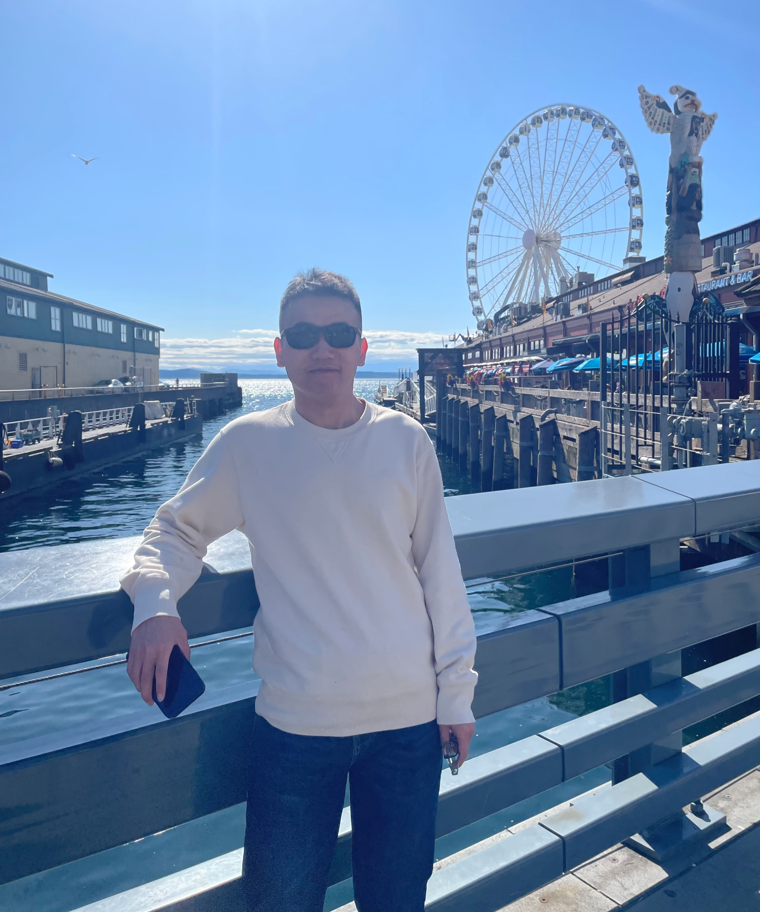 |
Zongsheng Yue (岳 宗胜) |
Biography
I am currently a research fellow at School of Computer Science and Engineering, Nanyang Technological University, working with Prof. Chen Change Loy. I received my Ph.D. degree from School of Mathematics and Statistics, Xi'an Jiaotong University, China, in 2021, under the supervision of Prof. Deyu Meng. Before that, I received my Bachelor degree from the College of Mathematics and System Science, Xinjiang University, in 2015.
Research Interest
My work focus on the noise modeling method in machine learning and the image restoration problem in low-level computer vision. Specifically, I mainly investigate how to design more efficient and interpretable image restoration models by incorporating the more robust noise modeling technologies and the classical Bayesian methods. Recently, I focus on the following research topics:- Diffusion model and its application
- Noise modeling
- Blind image restoration
- Bayesian methods in image processing
News
- 2024.9.13: The exteneded journal version of ResShift has been accepted by TPAMI.
- 2024.7.19: DifFace has been accepted by TPAMI.
- 2024.6.29: StableSR has been accepted by IJCV.
- 2024.6.02: Our recent work MOWA, a general image warping framework, is available on arXiv.
- 2024.6.02: We have exteneded ResShift to a journal paper, capable of handling general restoration tasks. Welcome to follow.
- 2024.2.05: Our work VIRNet for blind imaage restoration has been accepted by TPAMI 2024.
- 2023.9.22: Our recent work ResShift has been accepted by NeurIPS 2023 as a spotlight presentation.
- 2023.7.31: We release the source Code of ResShift.
Research Experiences
|
MMLab@NTU, Nanyang Technological University, Singapore Research Fellow, Apr. 2022 ~ present Supervisor: Prof. Chen Change Loy |
|
| 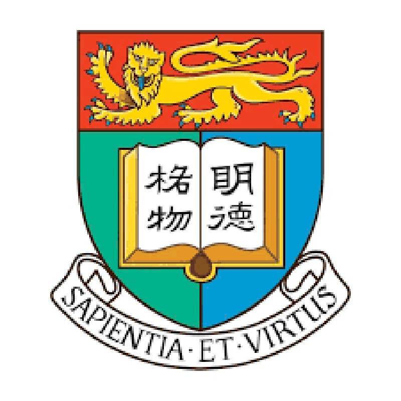 |
Computer Vision Group, The University of Hong Kong, Hong Kong Postdoctoral Researcher, Sep. 2021 ~ Mar. 2022 Supervisor: Assoc Prof. Kenneth K.Y. Wong |
|
DAMO Academy, Alibaba Group, Shenzhen, China Research Intern, Mar. 2021 ~ Sep. 2021 Supervisor: Prof. Lei Zhang |
|
|
Department of Computing, The Hong Kong Polytechnic University, Hong Kong Research Assistant, Oct. 2018 ~ Jun. 2019 Supervisor: Prof. Lei Zhang |
|
| 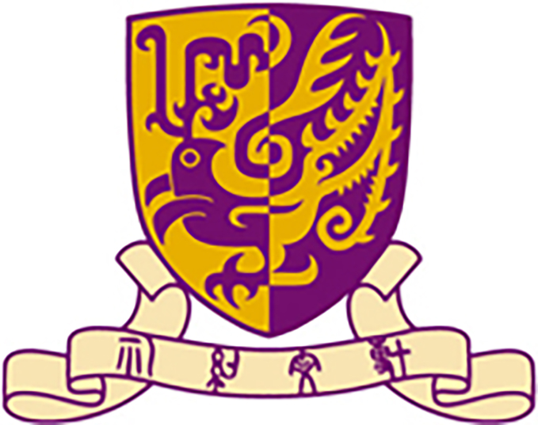 |
Institute of Future Cities, The Chinese University of Hong Kong, Hong Kong Research Assistant, Feb. 2017 ~ Sep. 2017 Supervisor: Prof. Leung Yee |
Preprint
| 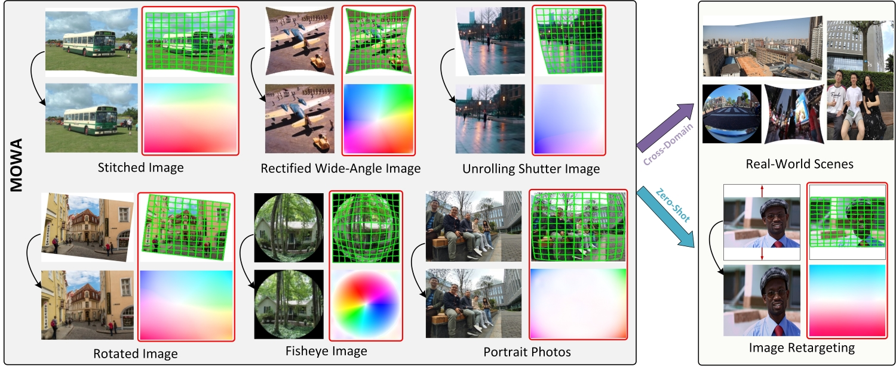 |
MOWA: Multiple-in-One Image Warping Model |
Selected Publications [Full List]
| 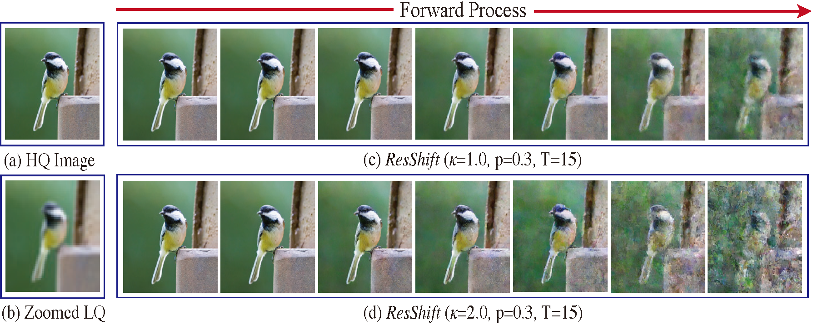 |
Efficient Diffusion Model for Image Restoration by Residual Shifting |
| 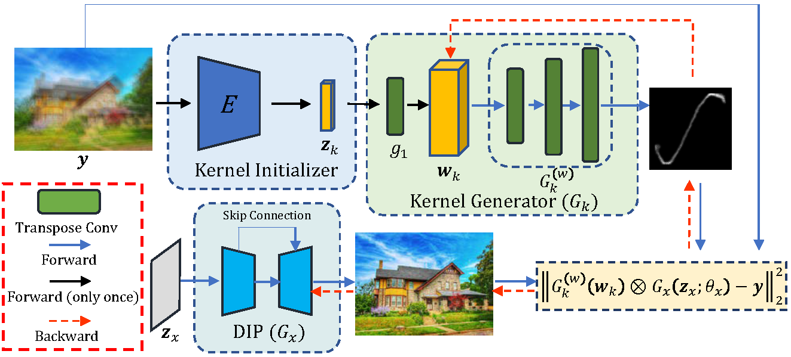 |
Blind Image Deconvolution by Generative-based Kernel Prior and Initializer via Latent Encoding |
| 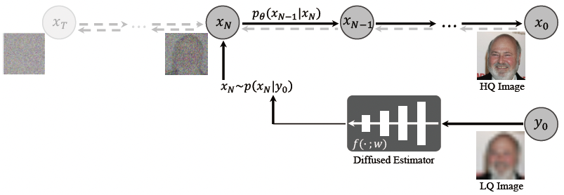 |
DifFace: Blind Face Restoration via Diffused Error Contraction |
| 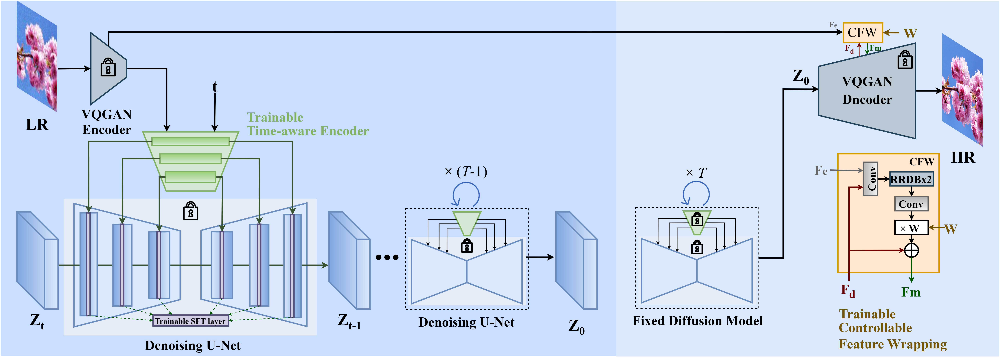 |
Exploiting Diffusion Prior for Real-World Image Super-resolution |
| 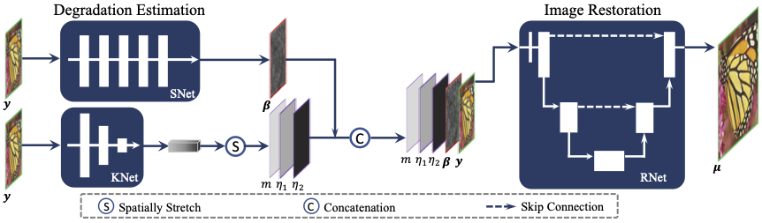 |
Variational Image Restoration Network |
| 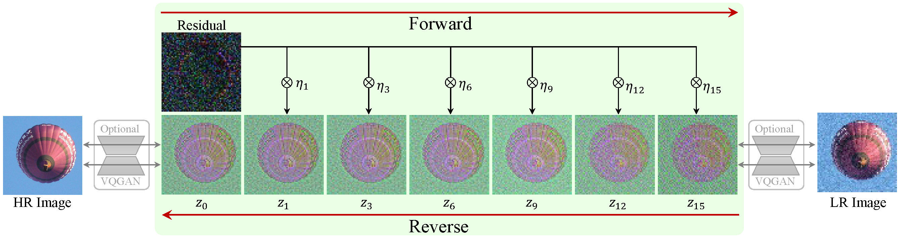 |
ResShift: Efficient Diffusion Model for Image Super-resolution by Residual Shifting |
| 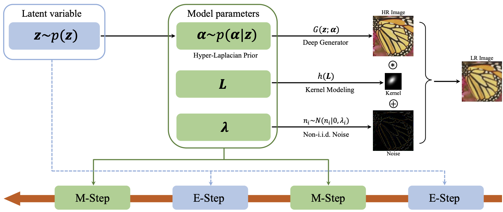 |
Blind Image Super-resolution with Elaborate Degradation Modeling on Noise and Kernel |
| 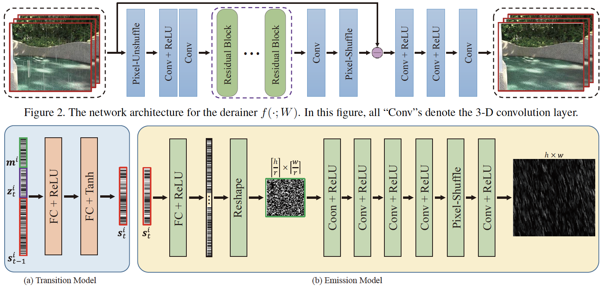 |
Semi-Supervised Video Deraining with Dynamical Rain Generator |
| 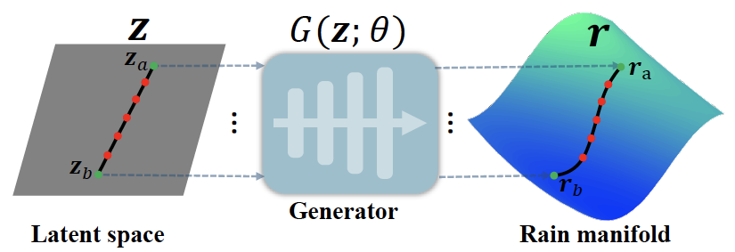 |
From Rain Generation to Rain Removal |
| 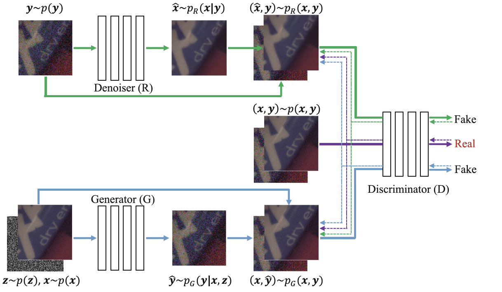 |
Dual Adversarial Network: Toward Real-World Noise Removal and Noise Generation |
| 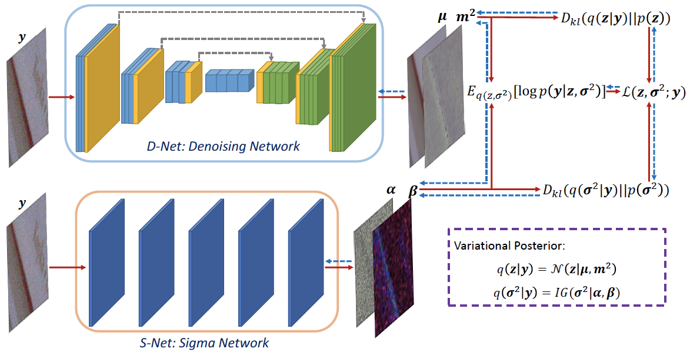 |
Variational Denoising Network: Toward Blind Noise Modeling and Removal |
| 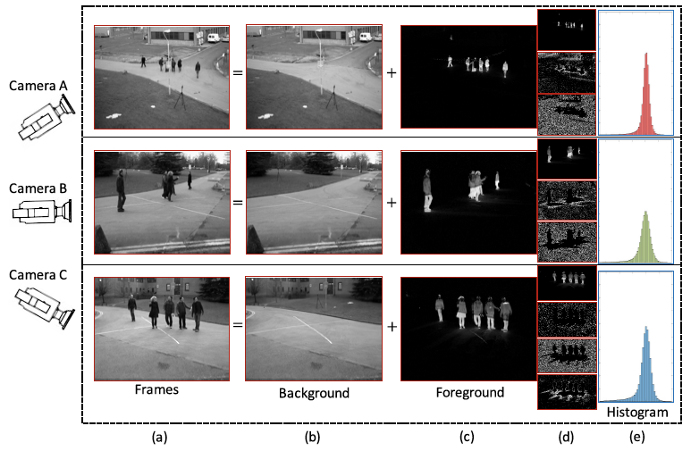 |
Robust Multiview Subspace Learning With Nonindependently and Nonidentically Distributed Complex Noise |
| 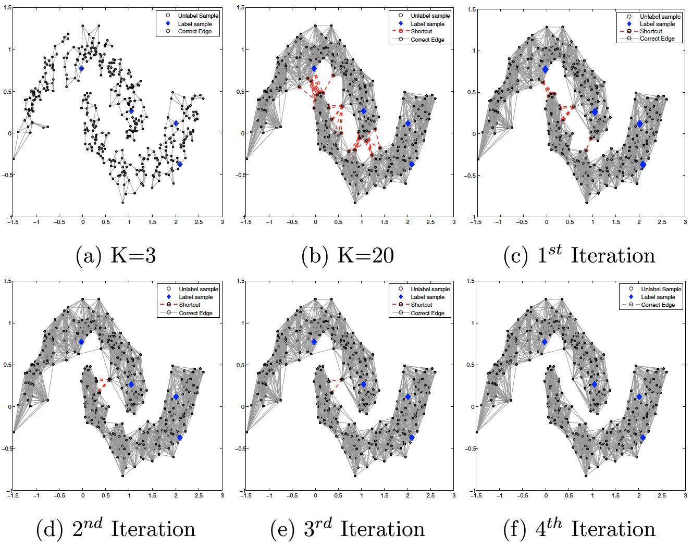 |
Semi-supervised Learning through Adaptive Laplacian Graph Trimming |
Services
Journal Reviewer:
- IEEE Transactions on Pattern Analysis and Machine Intelligence (TPAMI)
- IEEE Transactions on Image Processing (TIP)
Conference Reviewer:
- Neural Information Processing Systems (NeurIPS)
- International Conference on Learning Representation (ICLR)
- International Conference on Machine Learning (ICML)
- Conference on Computer Vision and Pattern Recogntion (CVPR)
- International Conference on Computer Vision (ICCV)
- AAAI Conference on Artificial Intelligence (AAAI)